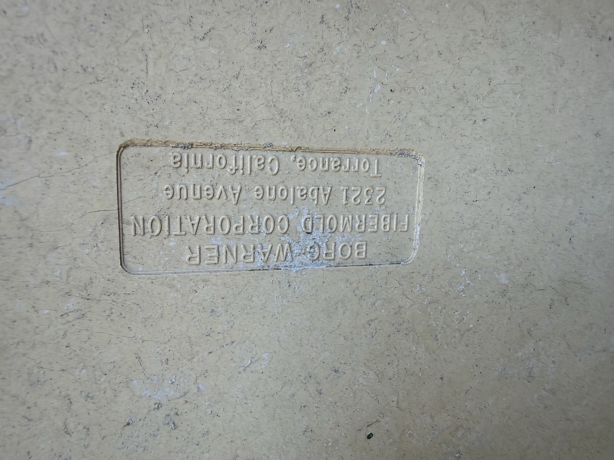
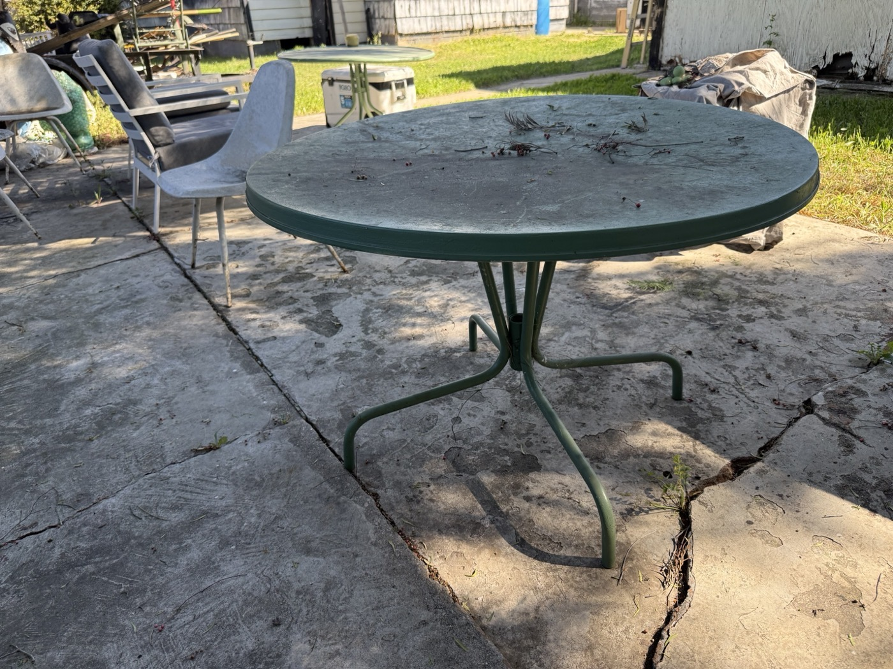
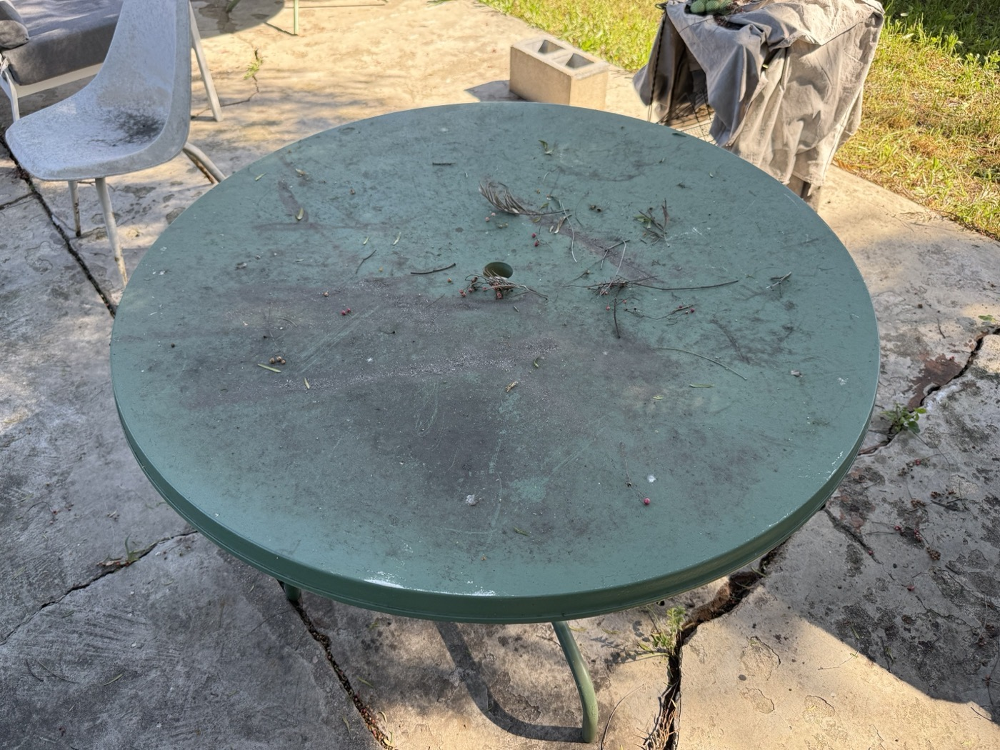
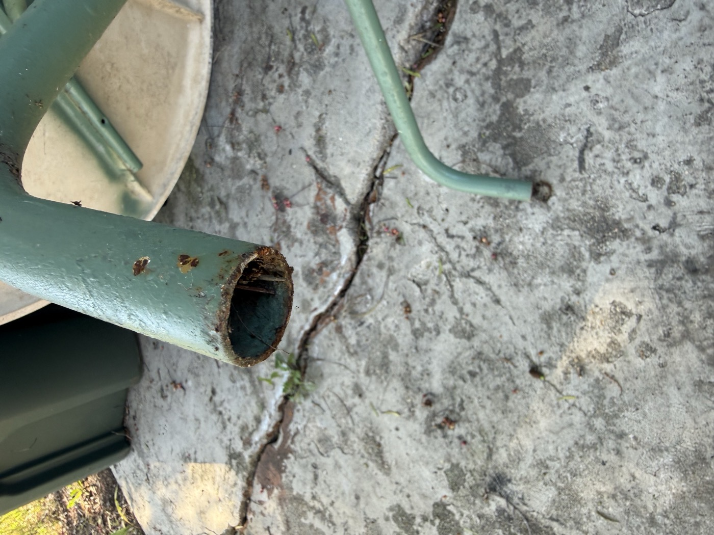
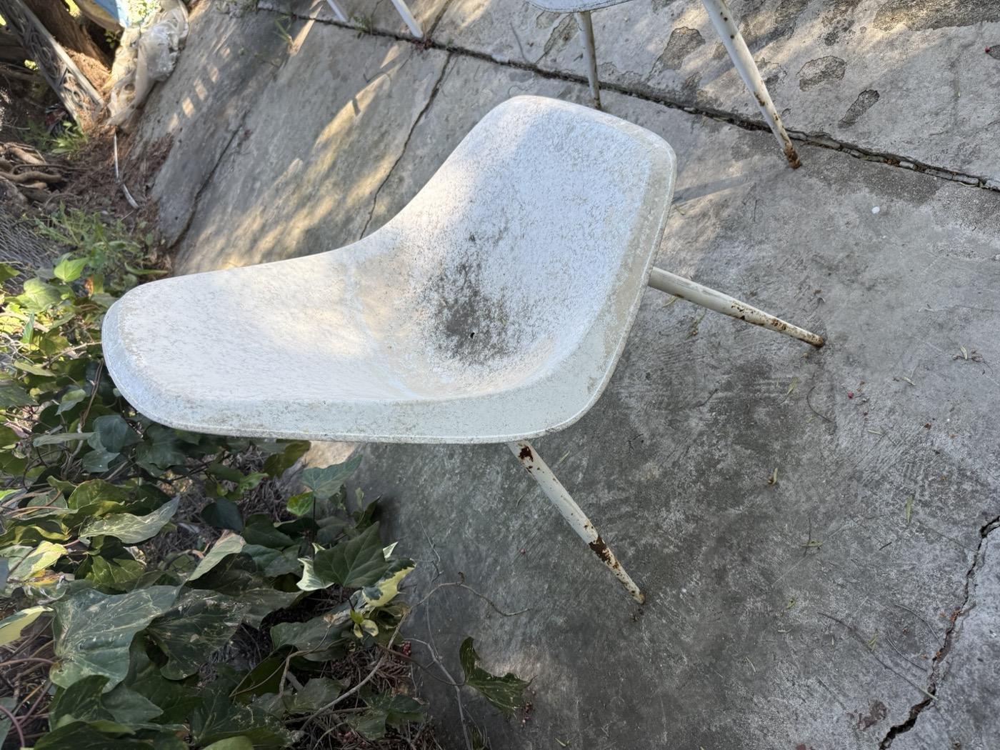
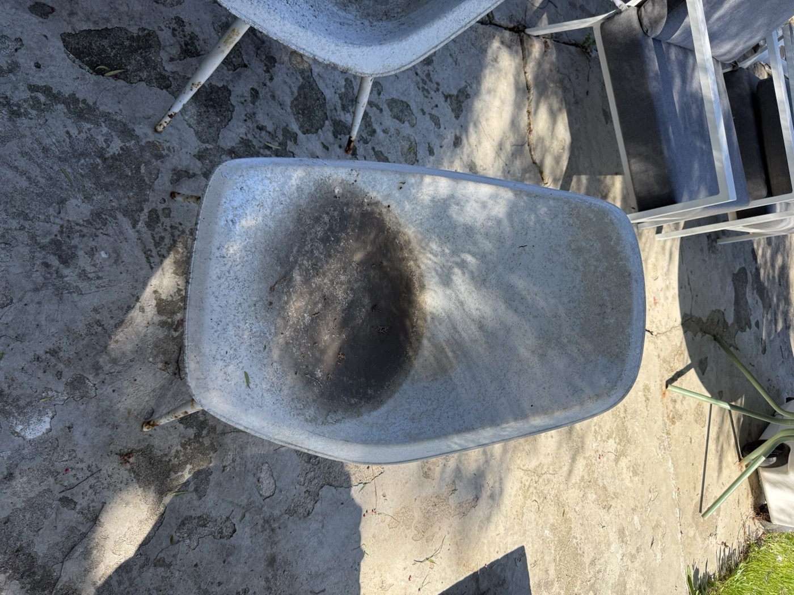
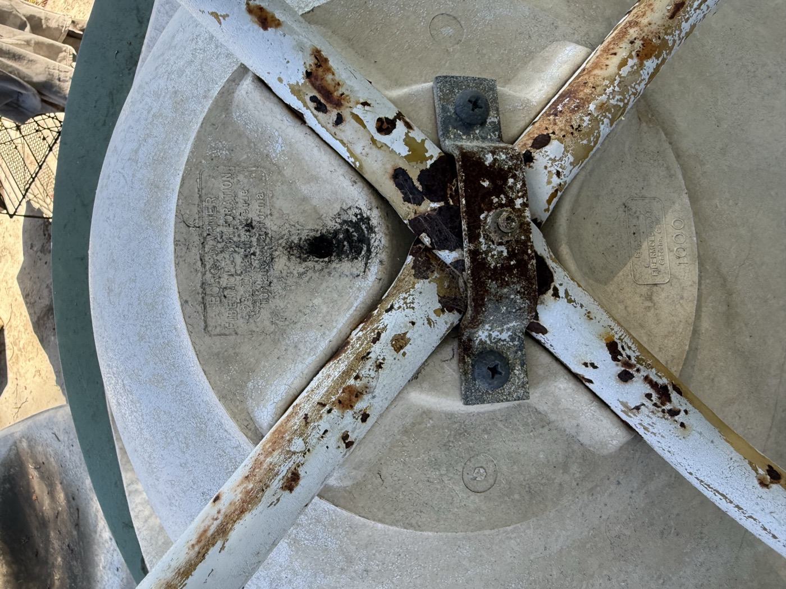
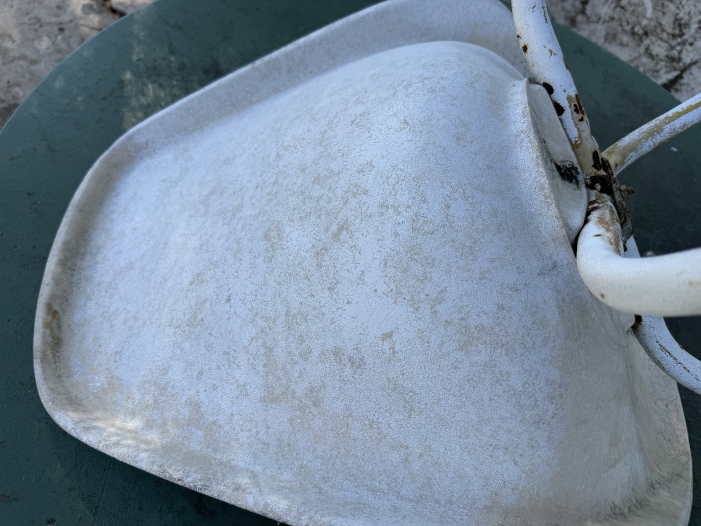
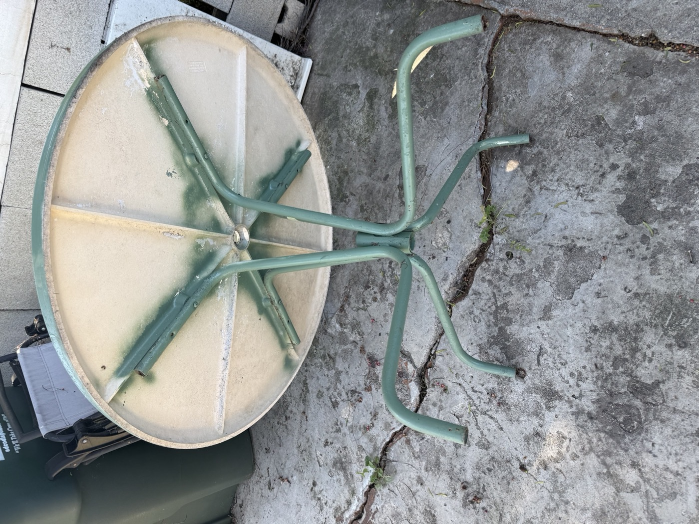
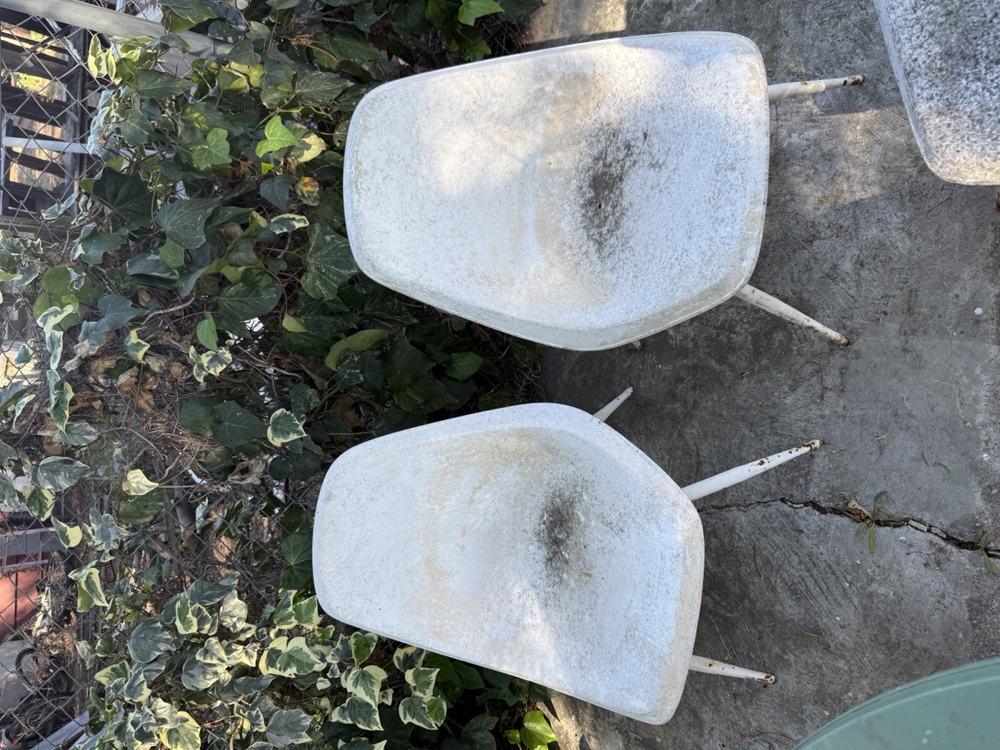

01 The Find
This is a complete five-piece patio set manufactured by Borg-Warner Fibermold Corporation in Torrance, California. Four fiberglass shell chairs and a matching round fiberglass-top table on a tubular steel spider base. The underside carries the Borg-Warner stamp with the Torrance factory address.

Borg-Warner was a Fortune 500 conglomerate best known for automotive transmissions. Their Marbon Chemical Division developed Cycolac, one of the first commercial ABS plastics. Fibermold was the manufacturing arm that turned those materials into consumer products, including these patio sets.
The South Bay Connection
The Fibermold factory sat in the same South Bay LA industrial corridor as Zenith Plastics in neighboring Gardena, the company that molded the original Eames fiberglass shells for Herman Miller from 1950 to 1953. These aren't Eames chairs and they aren't copies. They're a separate product from the same neighborhood and the same material technology.
Timeline
02 The Set
What we're working with: one round fiberglass table top on a steel spider-leg base, four fiberglass bucket-shell chairs on white-painted tubular steel X-bases. Everything is structurally sound. The problems are cosmetic: decades of outdoor grime, rust at every metal joint, and a thick layer of dirt caked over old spray paint on the table top.









03 The Plan
This is a two-weekend project. Weekend one is prep and metalwork. Weekend two is finishing the fiberglass. Total supply cost is around $135. The goal is useable, not museum-grade. We're cleaning, treating rust, repainting the metal frames, and bringing the fiberglass back with Penetrol. The table top is mostly just dirty — a good wash may be all it needs. No stripping, no reupholstering, no overthinking.
Key Products
Penetrol (by Flood/PPG) is the standard finish for vintage fiberglass shell restoration. It penetrates oxidized gelcoat and restores the oils that made the original finish look right. One quart covers all four chairs and the table. ~$18 at any hardware store.
Rustoleum Stops Rust line handles all the metal: Rusty Metal Primer for the bad spots, Protective Enamel for the topcoat. $7-8/can.
Naval Jelly (Loctite brand) chemically converts rust to iron phosphate, giving primer a stable surface. $8 for a bottle.
04 Weekend 1: Prep & Metal
Disassemble
Remove chairs from bases. Remove any hardware you can. Label parts if needed. You want fiberglass and metal separated so you can treat them independently.
Wash Everything
Hot water, dish soap, stiff nylon brush. Scrub every fiberglass surface, both sides. Rinse thoroughly. Let dry completely. This alone will remove 60% of what looks like "damage."
Table top note: The table top is dirty, not worn. What looks like damaged paint is mostly caked-on dirt over old spray paint. Wash it first and see what you're actually working with before committing to a full repaint.
Clean the Shells
The chairs have been sitting uncovered under a tree. The grime is outdoor dirt and organic buildup, not body oil stains. A good scrub will handle most of it. Escalate if needed:
- Magic Eraser (melamine foam) — try first on any stubborn spots. Wet, wring, scrub.
- Bar Keepers Friend (powder) — paste with water, sit 5 min, scrub with nylon brush, rinse. Contains oxalic acid.
The shells have white paint over what looks like an original peach color underneath. If the white paint is solid and not flaking, clean it, scuff with 220 grit, and paint over it. If you want to strip down to the original color, use Citristrip gel: brush on thick, cover with plastic wrap, wait 4-24 hours, scrape with a plastic putty knife. Multiple rounds for two layers. Do not use a pressure washer or heat gun on old fiberglass.
Wire Brush All Rust
Wire brush or Dremel with wire wheel on all rusted metal surfaces. Focus on hardware mounting points and the open tube ends. Remove all loose scale, flaking paint, and surface rust. Goal is solid substrate, not shiny bare metal everywhere.
Naval Jelly
Apply Loctite Naval Jelly to all rusted areas with a cheap brush. Wait 10-15 minutes, no more. The phosphoric acid converts iron oxide to iron phosphate. Rinse completely with water. Neutralize with a baking soda/water wipe if you're cautious. Dry thoroughly.
Do not leave it on more than 15 minutes. It will eat through paint on adjacent areas.
Treat Open Tube Ends
Spray Boeshield T-9 or Fluid Film into all open tube ends on the table legs. These are waxy corrosion inhibitors originally developed for Boeing. Let drain and dry. You'll cap these with rubber plugs after painting.
Prime All Metal
Prime within 24 hours of rust treatment. Use Rustoleum Stops Rust Rusty Metal Primer on rust-treated areas. Clean Metal Primer on everything else. Two thin coats. Let cure overnight.
05 Weekend 2: Finishing
Sand the Fiberglass (If Needed)
If cleaning didn't fully revive the shells, sand. Start with 220 grit sanding sponge in small circles. Follow with 400 grit wet-sand, then 600 grit wet-sand. Wipe with a tack cloth.
Wear an N95 mask. Fiberglass particles embed in lung tissue. Work outdoors, downwind. Wet-sand whenever possible to keep dust down. Safety glasses mandatory.
Table Top: Adhesion Promoter (If Repainting)
If the table top cleaned up fine in step 2, skip to step 11. If the old spray paint is rough, patchy, or you just want a fresh color, continue here.
Spray Rustoleum Adhesion Promoter over the entire sanded table top. Let flash off for 15 minutes. This is the step most DIYers skip and then wonder why paint peels. Gelcoat is chemically inert and slick even when scuffed.
Prime & Paint the Table Top (If Repainting)
One coat of Rustoleum Filler Primer, let cure, light scuff with 220. Then two thin coats of Rustoleum 2X Ultra Cover or Marine Topside Paint in your color of choice. Light sanding with 320 wet between coats. Cure 48-72 hours before use.
Topcoat Metal Frames
Two thin coats of Rustoleum Stops Rust Protective Enamel in gloss or semi-gloss. Gloss White (#7792) is a standard match for white tubular steel bases. Two thin coats. Cure 24 hours.
For the table base, match whatever color you chose for the top, or keep the original green.
Penetrol the Chair Shells
Apply Penetrol with a lint-free cloth (old t-shirt or Swedish dishcloth). Wipe on a thin, even coat. A little goes a long way. Do the bottom first, let cure several hours, then flip and do the top.
Two coats total. Let cure 48 hours before use. Follow with carnauba wax for added UV protection if you want.
Note: Penetrol can yellow white shells over time. If your shells are very white and you want to keep them that way, use a standard marine clearcoat instead.
Cap the Tube Ends, Add Glides
Press rubber or plastic end caps into all open tube ends. Mid-century patio furniture typically used 7/8" or 1" OD tube. Measure with calipers or the paper-wrap method (circumference divided by 3.14 = OD). Available in packs on Amazon or from Patio Chair Supplies.
Reassemble
Bolt the chair shells back onto the bases. Reattach table top to spider base. Set it up. Sit in it. You're done.
06 Supply List
| Item | Cost |
|---|---|
| Loctite Naval Jelly, 8 oz | $8 |
| Rustoleum Rusty Metal Primer spray (x2) | $14 |
| Rustoleum Clean Metal Primer spray | $7 |
| Rustoleum Stops Rust Protective Enamel, white (x2-3) | $18-24 |
| Rustoleum Adhesion Promoter spray | $8 |
| Rustoleum 2X or Marine Topside, table color (x1-2) | $10-16 |
| Flood Penetrol, quart | $18 |
| Bar Keepers Friend, powder | $5 |
| Sandpaper assorted (220 / 400 / 600) | $10 |
| End caps / glides, pack | $10 |
| Boeshield T-9 aerosol, 12 oz | $15 |
| N95 respirators, nitrile gloves, tack cloths | $12 |
| Total (estimated) | $135-150 |
Everything is available at Home Depot, Lowe's, or Amazon. The Penetrol and Naval Jelly are the two specialty items; the rest is standard paint aisle stuff.
07 Don't Do This
No Acetone on Gelcoat
Acetone softens gelcoat surfaces and causes crazing. If you need a solvent, use mineral spirits and wipe off immediately.
No Dry Power Sanding
Fiberglass dust embeds in skin and lungs. Always wet-sand or at minimum wear an N95. Work outdoors, downwind.
No Pressure Washer
High pressure can delaminate surface layers or force water into micro-cracks in 60-year-old fiberglass.
No Paint Without Primer
Topcoat over bare metal without primer will fail within one season. Topcoat over bare gelcoat without adhesion promoter will peel in sheets.
No Steel Wool on Fiberglass
Steel fragments embed in the surface and rust, leaving permanent brown spots that weren't there before.
No Thick Penetrol Coats
A teaspoon per chair. Thick coats stay tacky and attract dust. Two thin coats with 48 hours between.
No Plugging Without Treating
Capping open tube ends without first treating the inside just traps moisture and accelerates rust.
No Painting in Direct Sun
Paint dries too fast, solvents flash off before bonding, and you get bubbles. Work in shade or before 10 AM.